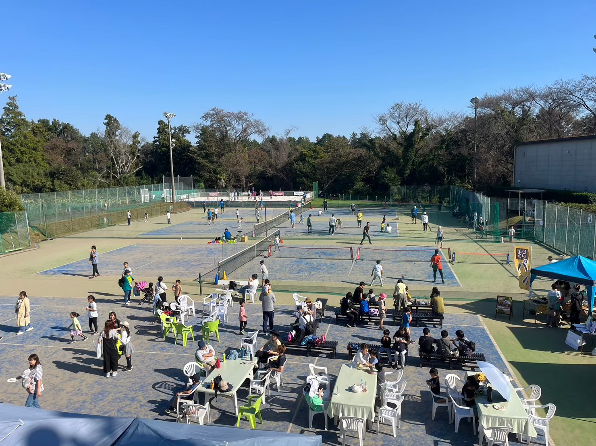
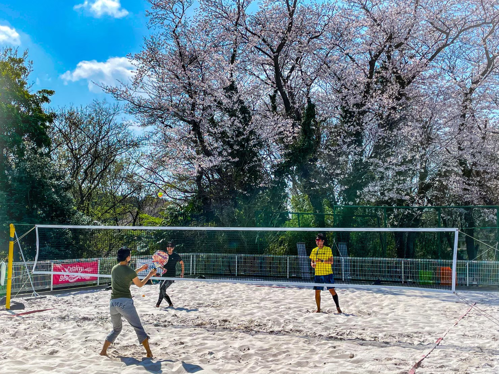

小田急江ノ島線 藤沢駅からほど近く、湘南の空の下で思いきりテニスが楽しめる屋外コート施設です。ナイター完備で、仕事帰りの一汗にもぴったり。会員・ビジターどちらのご利用も歓迎しています。
| コート料金 | 会員 | ビジター |
|---|---|---|
| 平日 | ¥1,100〜 | ¥2,200〜 |
| 土日祝・平日ナイター | ¥1,400〜 | ¥2,800〜 |
※料金は1時間・1面あたりの税込価格です。最新の料金は施設までお問い合わせください。

実際の砂浜を持ってきたビーチテニス専用コートがあります。
ビーチじゃないのに、ビーチがある。他にはない開放感が魅力です。初心者体験会から、大会開催までフル対応。